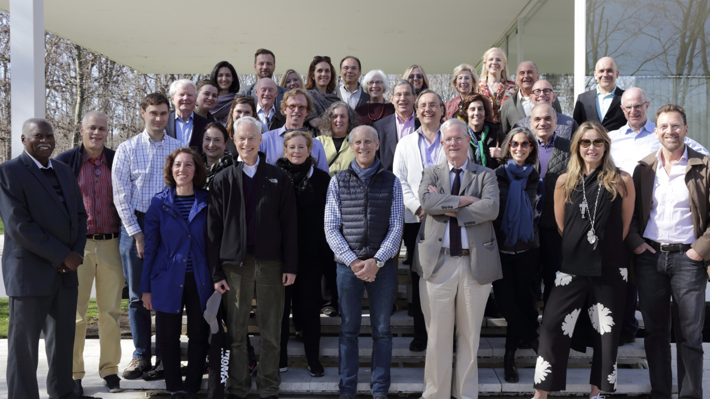

Officers and Board of Trustees
Currently, the board of trustees includes 46 trustees and 15 life trustees. Even including the board’s 14 “honorary” trustees, who do not have voting rights and do not play as direct a role in the museum, this amounts to an average individual contribution of more than $7 million. The Founders Wall was created in 2004, when MoMA’s expansion was completed, and features the names of actual founders in addition to those who gave significant gifts; about a half-dozen names have been added since 2004. For example, Ileana Sonnabend’s name was added in 2012, even though she was only 15 when the museum was established in 1929.
